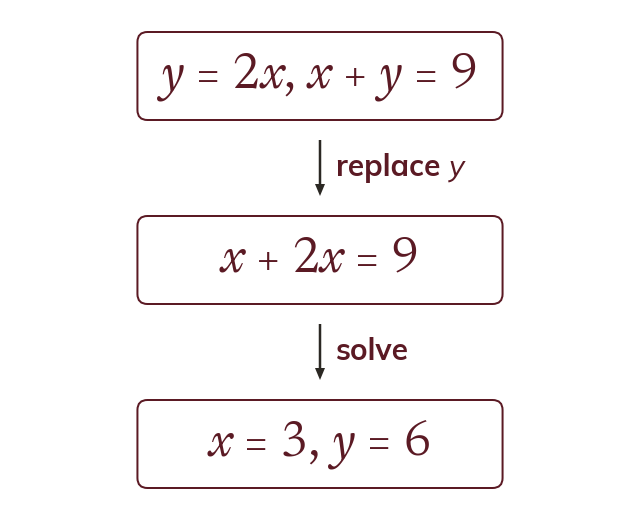

Replacing a variable
One equation may already give a variable on its own, like y = 2x. Replace that variable in the other equation. That leaves one equation in one unknown.
Where one equation already gives a variable on its own, that expression can replace the variable in the other equation. The result is a single equation in one unknown.